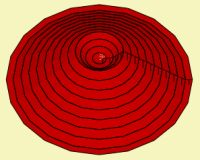
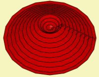

| Identifier | DirIsAxial= | |
| Dimension | CircSym only | |
| Format | [true, false] | |
| Purpose | Direction of motion of a group of driving elements | |
| Used in | Driving | |
| See also | Direction= | |
DirIsAxial= is similar to Direction=, however used for Dim=CircSym.
 |
 |
|
| Aligned | Normal | View Page |
For example
Driving
DrvGroup=1001
RefElements="Cone"
DirIsAxial=true
In circular symmetric mode there can be only two directions: Normal to the element or along the axial-axis.